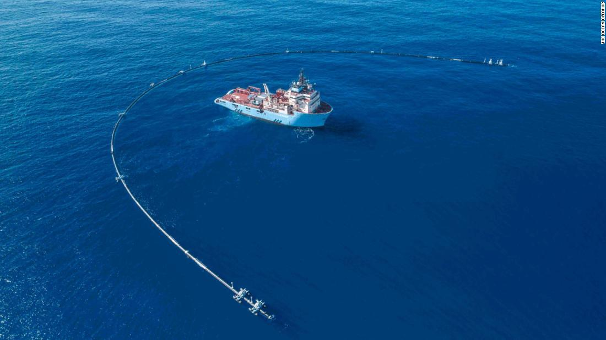

Can technology save the environment?
In a world of 9 billion expected by 2050 – including 3 billion new middle-class consumers – the challenges of expanding supply to meet future demand are unprecedented. The World Business Council for Sustainable Development (WBCSD) and the Global Footprint Network estimate that we have far exceeded the Earth’s capacity to sustain our current levels of consumption and that in the very short term we are on track to consume the equivalent of more than twice what our planet can regenerate; the United States is consuming up to five times that level. The environmental impacts are clear; the list is vast, well known and depressing. Climate change is one of them and its here with us and here to stay. Deniers are few and far between funded by special interests lobbying politicians and being extremely successful at it. Inaction has been the result, with endless meetings yielding the same result – nothing. However, the tide may be changing. Both the understanding of the issues and the impacts are evident for a globally connected society. Much of our challenges spring from a wasteful developmental philosophy, our current “take-make- dispose” model in the fast-moving consumer goods sector alone leads to a total value chain waste of 80% or $2.5 trillion per year. And in the manufacturing sector the figure could be as high as 90% with packaging thrown away being one of the biggest culprits. In agriculture and food production the opportunity is enormous, both economically and morally. One -third of all food produced for human consumption is lost or wasted before it is eaten, the UN’s Food and Agricultural Organization estimates that this equals to $750 billion. In the US, 40% of all produce is not eaten – and it’s projected that it also generates up to 10% of all greenhouse gases. Just in Europe 100 million tonnes are thrown away each year. This is not only an economic issue, but also an insult to humanity when over 840 million people go hungry each year. Relying on efficiency gains alone will not be enough to meet global demand: the context calls for systemic changes, and in that respect the switch from a linear to a regenerative circular economy provides interesting options. The circular economy aims to eradicate waste – not just from manufacturing processes, as lean management aspires to do, but systematically, throughout the life cycles and uses of products and their components. Within this economic model, designing durable goods to be restorative will keep components and products in use for longer, while ensuring that biological materials can re-enter the biosphere at the end of their life will contribute to safeguarding soil productivity. In a circular economy, the goal for durable components, such as metals and most plastics is to reuse or upgrade them for other productive applications through as many cycles as possible. This approach contrasts sharply with the linear mindset embedded in most of today’s industrial operations. Even their terminology – value chain, supply chain, end user – expresses a linear take–make–dispose view. Ultimately, the circular economy could decouple economic growth from resource consumption. The World Economic Forum, in partnership with the Ellen MacArthur Foundation and McKinsey, forecasted savings of up to 40-50% by utilizing these production models. The potential for innovation, job creation and economic development is huge: estimates indicate a trillion dollar opportunity. If we believe half of Peter Diamandis predictions about an abundant world and that exponentially growing technologies will enable us to make greater gains in the next two decades than we have in the previous 200 years, we could soon have the power to exceed the basic needs of humankind. Abundance for all could be within our grasp: Dean Kamen’s “Slingshot”, a technology which can transform polluted water, salt water or even raw sewage into high-quality drinking water for less than one cent a liter; the Qualcomm Tricorder which promises a low-cost, handheld medical device that allows anyone to diagnose themselves better than a board certified doctor; Despommier’s “vertical farms” which replaces traditional agriculture with a system that uses 80%less land, 90% less water, zero pesticides and transportation costs. And other emergent technologies such as Machine-2-Machine Communication, mobile technology, advances in nanotechnology, life and material sciences all provide an array of options for optimizing our production technologies to minimize waste. Also, evolving business models that alter not just how we produce, but how we consume have the potential for major disruption. “Pay for Service/rental businesses” under which Philips, for example, introduced the “Pay per lux” model, where they maintain ownership of the materials (light bulbs), and sells light as a service and other models such as “sharing economy businesses” (Uber, AirBnB) and fractional ownership businesses (Netjets) have the potential to maximize the utilization of assets, meet the demand for products and services without adding waste and unnecessary consumption. Clearly, continuing down the path we are in is not an option our planet can sustain. We must mitigate and restore the capabilities of our environment to sustain us and future generations. In how fast, widespread and effectively these new business models and technologies are deployed lies much of the answer to the challenge. And whether this is cause for optimism I am in no position to say.
In Chile
Researchers at the Chilean company SoluBag have created water-soluble plastic bags that do not harm the environment, reports AFP. The innovation does not contain the harmful petroleum derivatives of ordinary plastic, which were replaced by derivatives of a non-polluting limestone. Roberto Astete and Cristian Olivares, the people behind the creation of these biodegradable bags, hope to start marketing their product in October in Chile. This country was one of the first in Latin America to ban the commercial use of plastic bags, says AFP.
For the sea
A floating pipe about 600 meters long called Wilson is about to begin his mission to collect all the plastic in the middle of the Pacific Ocean. Last month, the Ocean Cleanup Foundation launched the world's first ocean cleanup system in San Francisco to face the famous "Great Pacific Garbage Patch," a giant pile of garbage between San Francisco and Hawaii that is twice the size of the This is the largest pile of five in the world's oceans.
